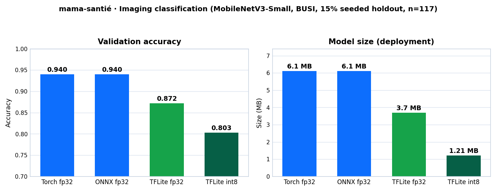

DaT Parkinson's Challenge
Deep Learning • Medical Imaging
DaT Parkinson's Challenge — Bayesian Ensemble
13-member deep-learning ensemble (2D MIP-CNN + 3D volume CNN) classifying DaT scans as normal vs abnormal, with anatomy-aligned preprocessing and Platt-scaled z-score model averaging.
- Competition SFMN / DrivenData
- Rank #31 of 361 — final test log loss 0.2946 (AUROC 0.9432)

Machine Learning • Health Systems • Mali
mama-santé — Breast-Cancer Care Platform
End-to-end breast-cancer care platform attacking the distance, money and time barriers in Mali: risk stratification, ultrasound classification, 4-level referral triage and road-network routing to the nearest capable centre — behind a Flask API and mobile-first UI.
| Risk stratification · CV AUC | 0.733 |
| Imaging · val acc (ONNX fp32) | 0.940 |
| On-device · full-int8 TFLite (1.2 MB) | 0.803 |
| Fairness · TPR gaps (region / wealth) | 0.60 / 0.18 |